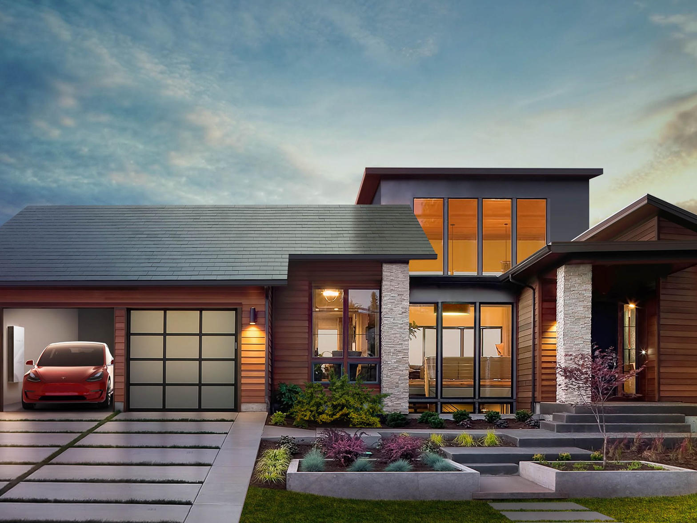
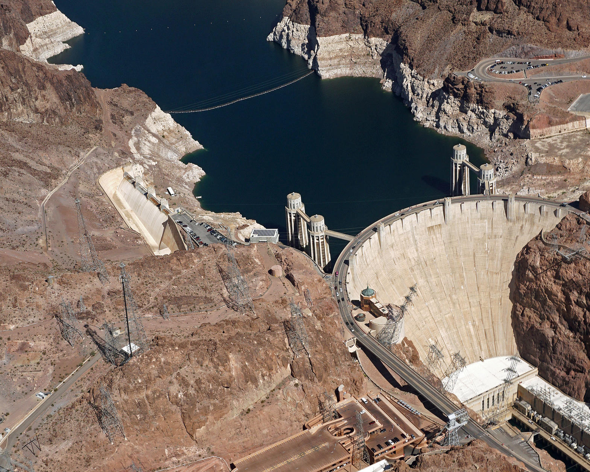
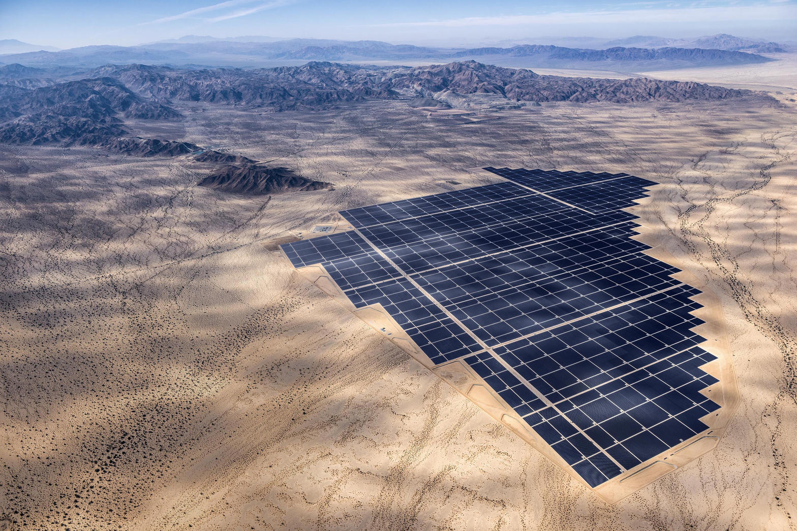
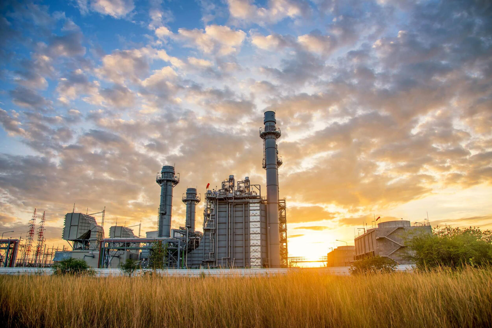
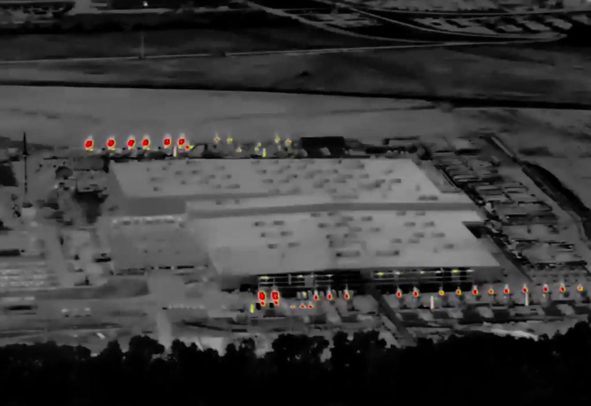

United States, 2025
Utility-scale generation. EIA.
Natural gas about 41%. Nuclear about 18%. Coal about 17%. All renewables about 24%, with wind near 11%. Fossil fuels still about 58% of utility-scale kilowatt-hours.
Energy / Investigative
Tesla stopped taking Solar Roof orders in August 2026. The same industry is now racing to cast gas-turbine blades so AI clusters can keep training. The mix that actually lights the West is not the mix from the 2016 keynote.
September 14, 2026 · High Tower District Stories · Fact-checked against EIA, NV Energy, Electrek, and court coverage
Solar Roof installs
~3,000
Total U.S. systems over nearly a decade. Target was 1,000 a week.
NV Energy South mix
65.6% gas
Retail fuel mix for southern Nevada through Sept. 30, 2025. Hydro is 2.0%.
Colossus turbines
27 to 69
Trailer-mounted gas units counted around Southaven, Miss., 2025-2026.
The claim that Tesla discontinued Solar Roof is true. Electrek reported it on August 20, 2026 from two sources close to the installer network. Tesla has not posted a press release. The website did the talking. tesla.com/solarroof now redirects to tesla.com/solarpanels. Solar Roof is gone from the Energy menu. Remaining products: Solar Panels, Powerwall, Megapack.
The scale numbers in the source note also hold. Wood Mackenzie and later Electrek tracking put lifetime U.S. Solar Roof systems near 3,000. Peak weekly pace was in the low twenties to low thirties, more than 95 percent short of the 1,000-a-week target Elon Musk set for 2019-2020. Tesla stopped breaking the product out in quarterly reports in early 2024. A 2023 class-action over mid-contract price jumps was settled. Tesla says it will honor existing warranties.
The $2.6 billion SolarCity acquisition in 2016 is the origin story. Solar Roof was the product used to sell that deal as more than a rescue. Buffalo Gigafactory New York, once a tile plant, now assembles Tesla's own 420-watt conventional panel.

The second half of the claim, that Musk "leaned into fossil fuels" to feed AI, is directionally true and needs the exact nouns. xAI's Colossus and Colossus 2 clusters in the Memphis area have been powered in part by trailer-mounted Solar Turbines SMT-130 units sited in Southaven, Mississippi. Counts in public reporting moved from about 18 in mid-2025 to 27, then 33, then state and flyover counts of 46, 60, and 69 by mid-2026. The NAACP sued in April 2026 under the Clean Air Act. In June 2026 the Justice Department asked a Mississippi court to dismiss the case on national-security grounds tied to Grok models used by the Department of Defense. xAI has said the machines are temporary and pledged to swap them for permitted permanent turbines. That is not a solar story. It is a race-against-interconnection story.
People who grew up on the Strip still talk as if Hoover Dam lights the neon. The dam is real. The share is small.
Three different pies answer three different questions. Do not mix them.
12 months ending Sept. 30, 2025. Company generation plus purchased power.

Primary figures below are 2024 in-state utility-scale generation compiled from EIA Form EIA-923 state totals (homesnacks aggregation of the official 2024 profile). That is the last complete annual file. A May 2026 monthly snapshot from Choose Energy, built on EIA Electric Power Monthly, is noted where solar has jumped. National 2025 shares come from EIA's Electricity Explained update.
In-state generation is not the same as the power a state consumes. California imports a large block. Tennessee imports from TVA neighbors. Treat each pie as "what this state produced," except the U.S. pie, which is national utility-scale generation.
Utility-scale generation. EIA.
Natural gas about 41%. Nuclear about 18%. Coal about 17%. All renewables about 24%, with wind near 11%. Fossil fuels still about 58% of utility-scale kilowatt-hours.
EIA 2024. CEC total-system mix in notes.
Gas 40.5%, solar 22.6%, hydro 13.8%, nuclear 8.6%, wind 7.3%. CEC's 2024 total system mix (with imports) is cleaner: gas 34%, solar 21%, wind 12%, large hydro 11%, nuclear 10%. May 2026 monthly solar share on the in-state meter hit 38.7%.
Largest U.S. generating state.
Gas 51.8%, wind 21.9%, coal 11.6%, solar 7.2%, nuclear 6.8%. May 2026 monthly: gas 48%, wind 22%, solar 15%. This is also the state where SpaceX is standing up a blades-and-vanes foundry in Bastrop.
Different from the NV Energy retail label above.
Gas 54.9%, solar 27.4%, coal 5.1%, hydro 3.5%. Ember put 2024 annual solar share over 30%. May 2026 monthly solar 40.1%, gas 43.7%. Generation mix is solar-heavier than the southern retail label because a lot of desert solar is contracted out of state.
Palo Verde nuclear is the ballast.
Gas 47.5%, nuclear 27.9%, solar 9.3%, coal 8.5%, hydro 4.6%, wind 2.2%. May 2026 monthly solar 21.8% as new desert plants come online.
Hydro plus nuclear, gas still first.
Gas 48.3%, hydro 21.7%, nuclear 21.0%, wind 4.7%, solar 2.4%. The state imports additional hydro from Quebec. That does not appear in the in-state pie.
Gas state with a solar climb.
Gas 76.8%, nuclear 10.9%, solar 7.0%, coal 2.9%. May 2026 monthly solar 10.8%, gas still 76%.
TVA nuclear and hydro. Colossus sits on this grid.
Nuclear 42.3%, coal 22.9%, gas 21.6%, hydro 11.7%, solar 1.4%. May 2026 monthly nuclear 45%. The on-site Southaven turbines are extra generation, not in this TVA pie.

Residential glass tiles lost to three ordinary facts. They cost more to install than a reroof plus panels. They were slow. They never escaped custom-job economics. Conventional panels plus a battery do the same job for a house. Tesla admitted as much by redirecting the page.
AI clusters do not have that luxury. A training run wants hundreds of megawatts now, not a queue at the utility interconnection window. Portable gas turbines can be on a pad in months. A new combined-cycle plant or a new solar-plus-storage block plus new transmission is measured in years. That is why the same man who sold solar tiles in 2016 is now talking about nickel-superalloy blades in Bastrop.

On August 29-30, 2026, The Information reported SpaceX land and job listings for a "Blades and Vanes Foundry" near the Starlink plant in Bastrop, Texas. Musk confirmed the purpose on X: SpaceX and Tesla each claim they are building toward 100 GW per year of solar manufacturing, "but natural gas will still be needed to supplement and bootstrap solar for several years." The limiting part, he said, is casting hot-section blades and vanes. In-house casting, by his estimate, can pull gas turbines online up to 18 months faster. Only a handful of foundries worldwide can pour those single-crystal airfoils. Their books run into 2029-2030.
That is the transition he is actually running. Solar factories in parallel. Gas as the bridge fuel and the night fuel. Batteries where they already exist, especially in California. Temporary turbines where the interconnect is too slow, then a promise to replace them with permitted machines. In July 2026 reporting, xAI said it would remove the temporary Southaven fleet by July 2027 and replace it with 41 permanent gas turbines. Permanent gas is still gas.

Musk is not unique. He is early and loud. Microsoft, Amazon, Google, Meta, and Oracle have all signed large gas, nuclear, or behind-the-meter deals in 2025-2026 because the same interconnection queue is full. Hyperscalers are buying:
Tennessee is the local case. TVA's pie is already nuclear-heavy. Colossus still brought its own turbines because the campus could not wait on TVA's next combined-cycle unit and the transmission to it. That pattern will repeat anywhere a cluster wants 500 MW in 18 months.
Best current map, not a slogan:
Two things can be true at once. Tesla can still manufacture more solar panels in Buffalo and Texas than it ever made as roof glass. And the training runs that need power before the next substation is energized will burn methane until the queue clears. The tile died because it was a bad product. The turbine lived because it was a fast one.
Las Vegas is not a hydro town. It is a gas town with a growing solar roof of a different kind, the kind that sits on dirt in Clark County, not on a house in Summerlin. California looks cleaner once you count imports and rooftop. Texas is gas and wind in a knife fight. Florida is gas with a solar footnote. Tennessee is nuclear until a neighbor rolls turbines across the county line. The national pie is still four parts in ten methane.
The High Tower read is simple. Watch the interconnect queue and the foundry, not the keynote. The product that ships is the energy policy.